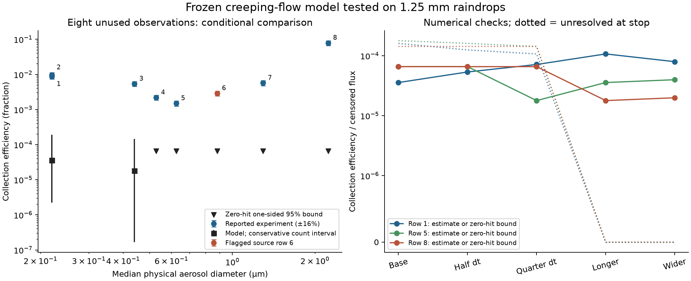
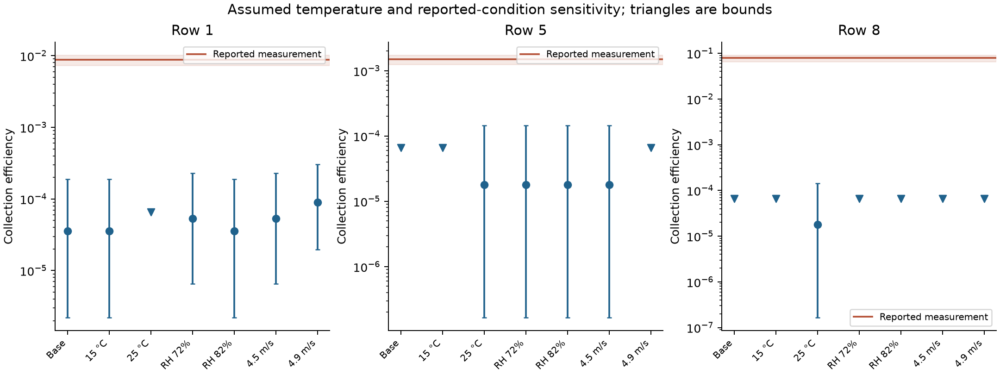

Conditional large-raindrop stress test; matched validation remains open.
Full methods, source qualifications and reproduction · All results CSV
Unchanged physical model. Reynolds number 389.1. 184 unique simulations and 901,120 paths.


Missing source temperature, median-size approximation and finite-Re flow mismatch prevent matched validation. Row 6 has a source arithmetic conflict. Zero captures are reported with sampling bounds, not treated as proof of zero collection.
| Row | Physical diameter (µm) | Observed CE | Predicted CE | Zero-hit upper bound | Censored flux | | --- | ---: | ---: | ---: | ---: | ---: | | 1 | 0.22 | 0.0088 | 3.57e-05 | — | 0.000161 | | 2 | 0.22 | 0.0097 | 3.57e-05 | — | 0.000161 | | 3 | 0.44 | 0.0054 | 1.79e-05 | — | 0.000143 | | 4 | 0.528 | 0.0022 | 0 | 6.58e-05 | 0.000179 | | 5 | 0.6248 | 0.0015 | 0 | 6.58e-05 | 0.000179 | | 6* | 0.88 | 0.0029 | 0 | 6.58e-05 | 0.000161 | | 7 | 1.294 | 0.0057 | 0 | 6.58e-05 | 0.000197 | | 8 | 2.235 | 0.079 | 0 | 6.58e-05 | 0.000143 |